galleria | ritratti
1923 - ritratto del baritono Giorgio Errico in vesti di scena
olio su tela misure n.d.
dedica autografata dal cantante:
"alla bravissima creatrice di questo quadro Silvia Zucchinetti offro il vero G. Errico. New York sept. 1923"
olio su tela incollata a tavola di compensato cm40 x 30
In uno spazio devitalizzato fino all'appiattimento, la figura esile e quasi emaciata della modella-bambina torna a proporsi in forma più sintetica con la forza d'una pennellata quasi aggressiva. Il volto pallido dona risalto ed importan za allo sguardo con evidente attenzione per i grandi occhi neri che si fanno baricentro espressivo dell'intera rappresentazione mediata da un lividore cromatico appena accennato.
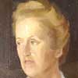
1949 - ritratto di Emma Jeker
olio su tavola di compensato cm 30 x 42
Un piglio sicuro, quasi energico, a definire lo sguardo calmo di Emma Jeker, pittrice, ospite frequente in quegli anni di casa Maggioni e delle mostre di pittura dianesi.
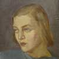
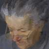
1950- ritratto della balia n°2
olio su tavola di compensato cm 40 x 30.
La ripresa del tema precedente privilegia qui toni molto più caldi e scuri in una scelta descrittiva più raccolta e intimista.
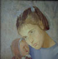
olio su tavola di compensato cm 56 x 41. Riprendendo in parte l ' impostazione del Ritratto del . figlio del 1933, la figura principale divide lo schema rappresentativo con il giocattolo - in questo caso la bambola - richiamo visi- bile e simbolo. al tempo stesso, della con -dizione psicologica infantile oggetto, negli anni, di specifica attenzione da parte della pittrice.
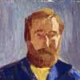
olio su tavola di compensato cm 61 x 50. Proprio per un fantasioso collega pittore amico dei coniugi Maggioni ed abituale frequentatore della villa di Capo Berta, ritratto in posizione frontale sotto una radente lama di luce da destra, la ricerca si esaspera improvvisamente sgranando le superfici rappresentative in blocchi tonali sfaccettati di forte cromatismo. I particolari si perdono, evidentemente a pro di una globalizzazione propositiva che si collega ad esempi successivi più di genere che di ritratto.
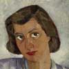
Olio su tavola di compensato; cm. 50x40. Negli ultimi ritratti di questo periodo, che finiscono per coincidere anche con gli ultimi anni di vita del marito, la pittrice pare imboccare una via sempre più personale verso una linea sintetico-introspettiva che risente senza dubbio delle frequentazioni artistiche piemontesi e lombarde dei primi anni cinquanta. Anche il viso di una nipote dell'onorevole Vittorio Foa ne viene vistosamente improntato in un'evidente magnetizzazione dello sguardo.
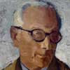
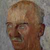
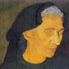
Olio su tavola di compensato cm. 77x50
Chiesa Parrocchiale di Diano Marina. La dolente immagine di cui al disegno precedente subisce nella trasposizione sulla tela un evidente processo di sgranamento descrittivo: i lineamenti si disseccano ulteriormente, lo sguardo pure assente scompare in una voluta indeterminatezza, le mani giunte si collegano ad un evidente segno di devozione. La figura si carica dunque di un simbolismo più marcato ed esplicito non riscontrabile nella prima idea legata semplicemente al soggetto rappresentato il cui dramma personale (un figlio disperso sul fronte russo) finisce per assumere qui toni d'epica familiare.
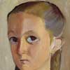
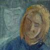
Olio e acrilico su foglio di masonite cm. 73x50.
Stilisticamente in linea col quadro precedente, è questa una delle rare opere maggioniane in cui affiora un intento simbolista. La maschera, rappresentata come sdoppiamento virtuale del generico volto femminile parzialmente indeterminato. riproduce una scultura del marito Gino conservata nello studio della pittrice.
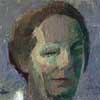
Acrilico su foglio di masonite liscia cm 60 x 40.
Sulla stessa linea del precedente ritratto di Sciavi si muove l'autoritratto del 1961, un quadro a cui la pittrice fu sempre molto legata e che si conserva tuttora nel suo studio a Diano Marina: forte introspezione affidata anche a scelte cromatiche coraggiose tese alla ricostruzione d'un'atmosfera dei sentimenti più che ad una semplice ricerca dell ' effetto. Ne è prova la notazione musicale che si ripete nell'angolo su periore sinistro e sulla spalla della figura ad indicare. probabilmente, la sensazione specificatamente legata ad un "ascolto" come dato fondamentale della realizzazione pittorica.
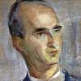
Tecnica mista su tela cm. 73x50.
Indubbio interesse riveste questo ritratto del Pierre Huet, un funzionario della Agence Europeénne pour l'energie nucléaire conosciuto a Parigi in occasione di un viaggio col figlio compiuto nel 1960, in cui si fondono la tendenza alla schematizzazione nella resa dei lineamenti conquistata nella seconda metà degli anni 1950 con sommarie notazioni ambientali "geometrizzate" volutamente sgranate dietro a scelte cromatiche molto levigate.
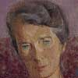
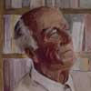
1981 ritratto di Walter Linden
Olio su foglio di masonite zigrinata cm. 69,7x60.
La morte dell'amico Walter Linden (avvenuta nel dicembre 1982) affretta i tempi dei bilanci e induce all'introspezione affettiva.
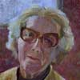
Tecnica mista su foglio di masonite cm. 70x50.
L'ultimo autoritratto dipinto da Silvia Maggioni coincide con un rinnovato interesse per la figura umana. Non è un caso che in esso l'artista si rap presenti, con espressione serena ma anche con l 'apparenza fisica di un'età non negata, sotto ad un quadro nel quale si riconoscono tronchi di ulivi: una cifra stilistica esibita, dunque, che la fa riconoscere pienamente nella definizione di "pittrice degli ulivi " coniata nel 1973 dal critico Lino Lazzari.